OPERATION MALLARD
A Delta Green operation for 3–5 Agents: 4–6 sessions, urban/suburban urgent response with cover-up pressure. Base of operations: FBI New Orleans; the shooting corridor runs TX→FL.
Overview & Hook
Delta Green has the Agents embedded with the FBI as counterterror experts on the main investigation. A Program cutout arranged the assignment; if Doyle's audit reaches the signature block, it reaches the Program. (Who signed, and what it costs: Lore Implications.) Their cover gives them lawful access to every shooter's electronic devices. They are working the same case for the Bureau and Delta Green, but every file they open for Delta Green must make sense to the task force.
Related materials: Handout 1: Tasking Packet (deploy at session start, with this hook).
Structure: the operation runs on one clock: twelve segments, midnight on Day 13. Its beats fire on the calendar or on player engagement (marked). Doyle acts at fixed checkpoints; exposure sets the intensity. See The Mallard Clock.
The Truth (Handler only)
idd13 ("i-dees," from "i deserve death 13") is a two-year-old online circle, part radicalization pipeline and part occult study group. It recruits isolated, angry men along the I-10 corridor from Texas to Florida. Its founder, "ork3rd" (Marcus Hale), is a sorcerer of Y'golonac at 0 SAN: serene and incapable of doubting himself. He believes that gathering witnessed suffering will strip away his humanity and bring about his promised apotheosis, "the change."
Hale grooms, degrades, and blackmails each shooter into a spoken Aklo surrender, "I AM YOUR TOOL, YOU ARE MY MASTER," sealed in flesh with a self-carved sigil. Below SAN 20 they belong to him like beloved pets. Each shooting is a sacrifice he watches live through the drone's etched lenses, staged as a Greek tragedy: the drone holds the "hero" in frame at the climax, the twelfth victim falls, and the hero's suicide ends the play.
Three attacks have succeeded. The activation verse has posted, and the fourth shooter goes live within 13 days at the same Jacksonville altar. The recruits skew young; the younger the vessel, the deeper the binding takes. The third, seventeen, shot like a marksman where the first was an amateur. Hale keeps his distance: the first shooter was Sheldon Reyes, 36, an Alabama warehouse worker sent to Midland to kill where nobody knew him.
Hale's weakness is the paper trail: cash purchases at corridor big-box stores, USPS-printed shipping labels, an RV registered to his dead mother on expired stickers. The trap: he is physically frail, but killing him triggers his sacrificial mark and makes everything worse.
The Threat
| Tier | Element | Notes |
|---|---|---|
| Mundane | The fourth shooter (armed, imminent); moderator-lackeys; garrot221's instability; Doyle's audit | Dangerous but comprehensible. The audit may be the deadliest thing in the operation. |
| Minor unnatural | Ritual lenses (SAN 0/1 to handle); blackmail archive (SAN 0/1 to read); binding marks at scenes | Agents can handle and examine them. This is the SAN cost of evidence. |
| Major | The projection tapes; ork3rd up close (the wrong-smile/wrong-voice moments) | Clear supernatural 1/1d6 (tapes, pledge footage); direct contact 1d6/1d10 (the sorcerer himself). |
| Cosmic | The Avatar of Y'golonac if the trap triggers | Survival-only. Cannot be fought conventionally. Full stat block at Hale's entry. |
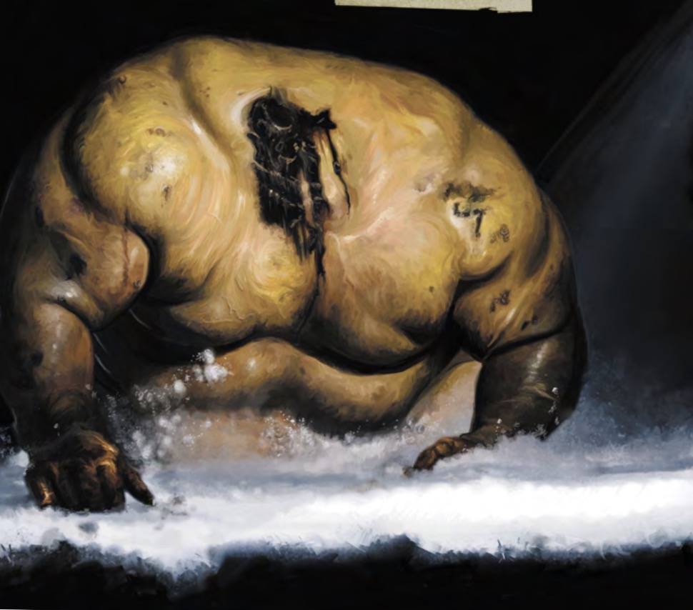
Lore Implications: Handler background, not discoverable in play
The CLERK cutout. The Agents' Case Officer, codenamed CLERK, arranged their assignment. A Program veteran inside the FBI's counterterror division, he personally signed the "expert detachment" orders. If Doyle's audit reaches the signature block, it reaches CLERK and, through him, the Program. Layers of cutouts obscure the FBI sponsorship above him; even the Agents don't know whose desk it ends on.
An uneasy partnership. This operation exists because the Outlaw Curtis McRay personally tipped off the Program's Director of Operations, Abe Mannen, and lent his own Katrina-era assets to the effort. The Program and Outlaw trust each other only as far as they have to. McRay's Friends know where the safe house is, and nobody says so.
Safe-house provenance. The Program has owned the L5 townhouse for years, a Katrina-era property. The facility McRay lent came from his own network: a New Orleans safe house cached after Operation REDBONE and now reactivated for the first time since. What paper exists runs through a shell the Friends retired a decade ago.
What Doyle can see. She can't see the Program layer, but she can follow the political sponsorship to a New York patronage connection, the kind now lodged in Director Patel's Bureau. She doesn't like it, and her hostility aims past the Agents at whoever signed them.
Clue Map
Six essential conclusions, three independent paths each. Each entry below cross-links to the locations where its paths surface. Run the table from either direction.
C1. The shootings are connected
- C1-A (physical): Confiscated bystander videos from all three scenes show the same small drone hovering over each massacre, minutes before police arrive. Surfaces at L1; printed artifact at Handout 10.
- C1-B (testimony): The first-scene detective's statement binder has the shooter screaming "he's watching, he always watches" before dying. His statement points to an audience, and it has been in the files since day one. Surfaces at L2; artifact at Handout 3.
- C1-C (unnatural): At the latest scene, an Agent with Occult spots a crude sigil chalked on a south-facing wall the shooter faced, an occult mark of binding: the shooter was binding his will to the Owner. The same mark appears at each site (confirmed in crime-scene photos). Surfaces at L2; artifact at Handout 2.
Skill checks: C1
Bureaucracy60
- Bureaucracy (C1-A): alt path: aviation sweep; no federal drone overhead at any scene, so it's private… and at all threealternative path: an aviation tasking sweep through the task force confirms no Bureau or partner asset was overhead at any of the three attacks. The drone is private, and it was at all three scenes. A registration check (FAA DiSCVR, Remote ID) can match a serial or an owner when the data exists. And no hit proves nothing either way. The request runs through Doyle's paperwork; a failed check still returns the answer, but leaves a discoverable trace in her audit trail.
Computer Science40 · 60 · 80
- Computer Science (C1-A): stabilize and enhance the bystander framesstabilizes and enhances the bystander frames for comparison.
- Computer ScienceCON 12 (C1-A): three-scene match; airframe + practiced loiter patternruns the three-scene comparison and matches airframe class and lighting from imagery; the loiter pattern (~60 m, in place minutes before police) reads as practiced. Sustained overnight review is what separates 60% from 40%.
- Computer ScienceINT 16 (C1-A): automated overlay; CCTV cross-match; launch/recovery from shadow geometryautomates the three-scene overlay; cross-matches drone timestamps against gas-station CCTV windows; reconstructs launch and recovery behavior from shadow geometry.
Criminology40
- Criminology (C1-B): the statement is the anomaly in a textbook lone-shooter fileflags the statement as the anomaly in an otherwise textbook lone-shooter file.
Forensics60
- Forensics (C1-C): chalk pressed to flaking: drawn many times beforethe mechanics under the read: inconsistent hand, pressure deepening in the mouth of it, chalk pressed to flaking. Drawn many times before.
HUMINT40 · 60 · 80
- HUMINT (C1-B): clean interview; Calloway's details stay intact and read reliableinterviews Calloway without contaminating the statement; keeps his volunteered details intact ("practicing something," "this part I remember exact"); reads them as reliable, specific, day-one material.
- HUMINTCHA 12 (C1-B): the shooter was performing for an audiencereads the statement's emotional structure (rehearsed vs. screamed, pride in precision) and extracts the point: the shooter was performing for an audience. Carries the room with Hurwitz, who guards his witness.
- HUMINTCHA 16 (C1-B): profiles ritual rehearsal; predicts the others' final hoursbuilds a behavioral profile from the statement alone (ritual rehearsal, audience-awareness, scripted final act) and predicts the same pattern in the other shooters' final hours.
Occult40 · 60 · 80
- Occult (C1-C): ritual marking, not gang tagging (wall the shooter faced)recognizes deliberate ritual marking, not gang tagging: wrong-handedness, a mouth where the palm should be, a wall the shooter faced.
- Occult (C1-C): binding/pact motif recurs across traditions: one teaching handplaces it by analogy: binding marks and pact-symbols recur across human occult traditions: submission of will, made visible. Same mark, three scenes, one teaching hand. On a success, translate "I AM YOUR TOOL" into binding language: names, commands, seals, repetition, restraint: the will ritually redirected, not merely owned. The idiom is ancient curse tablets and binding spells (cf. Eidinow, "Binding spells," in Magika Hiera).
- Occult (C1-C): doctrine of the mark; whether the binding works is not Occult's questionreads the doctrine from the drawing: the mouth receives the pressure, the binding point, and the mark was drawn from memory by someone taught through repetition, never allowed to copy. Whether the binding works is not a question Occult can answer.
SIGINT40 · 60 · 80
C2. Groomed through one online circle
- C2-A (physical): Device forensics (lawful access via cover): all three shooters held accounts on the idd13 invite-only Signal circle, courted for months by the same handful of users. The courtship included traded photos and kompromat from the start. Surfaces at L1; artifact at Handout 5.
- C2-B (testimony): Dana Reyes found forum-thread printouts in her brother's room. She is furious at the feds for "not investigating this." She pressed the issue, and the trail was buried; she doesn't know Delta Green suppression was the reason. She'll hand over the printouts if treated gently and shut down if condescended to. Surfaces through Dana Reyes at L2.
- C2-C (unnatural): Buried in the circle's library are garbled invocations that a scholar recognizes as deliberately butchered litany: a consumption-cult tradition surviving only in censored grimoire fragments, its god never named. Separately, 13 days before each mass murder/sacrifice, at 1:00 p.m. GMT (the 13th hour), the most deeply influenced members post sudden esoteric insights and "projections" they can't explain. A projection is not a vision: ork3rd pushes one of his own past atrocities into a scarred member's mind, and the member methodically reenacts it on camera, weeping and unable to say why. The inner circle treasures these tapes above all other tokens. Surfaces at L3.
Skill checks: C2
Bureaucracy60
- Bureaucracy (C2-A): alt path: provider records on garrot221's handles: subpoena or §2703(d) order; traces to one upstream circlealternative path: provider records on garrot221's known handles (basic subscriber and payment records by subpoena under 18 U.S.C. § 2703(c)(2), more detailed non-content records by court order under § 2703(d)) trace provider, hosting, and payment to a single upstream: one circle grooming all three, not three lone wolves, without waiting on device extractions. Paperwork through Doyle or the DG chain; a failed check still returns the records, but leaves a discoverable trace. (An NSL doesn't fit a domestic case with no foreign-intelligence link; if you want one, add that angle first.)
Computer Science40 · 60 · 80
- Computer Science (C2-A): extract the Signal session from the seized device: membership, join dates, deleted mediaextracts the locally stored Signal session from the shooter's phone: membership count, join dates, deleted media containers. Signal itself supplies nothing from its servers (no content, no member lists), so everything on this path comes from the device.
- Computer Science (C2-A): grooming arc across three devices; ork3rd's DM graph isolatedreconstructs the grooming arc across all three devices: the kompromat trade as standardized initiation rite, the 90-day account-burn cycle; isolates ork3rd's DM graph from lackey traffic.
- Computer ScienceINT 16 (C2-A): burned-account artifacts; 41-account graph; ork3rd's signature habitrecovers burned-account artifacts; maps the full 41-account graph; profiles ork3rd's tradecraft as trained, disciplined, self-taught, with one repeated habit that identifies his hand. Profiling the man from the artifacts is an INT leap.
HUMINT40 · 60 · 80
- HUMINT (C2-B): get Reyes talking; confirm the printouts existgets Dana Reyes talking without triggering her distrust; she confirms the printouts exist.
- HUMINT (C2-B): her fury is grief at the buried trail: pick the approach that gets the printoutsreads her fury correctly, grief redirected at the buried trail, not politics, and chooses the approach that gets the printouts handed over.
- HUMINT (C2-B): elicits "my owner" + the logs; gauges how close she is to the presselicits what she hasn't told the FBI (he called someone "my owner"; she's read the logs) in one sitting; gauges precisely how close she is to going to the press.
Occult40 · 60 · 80
- Occult (C2-C): deliberately corrupted litany: someone desecrating a real traditionrecognizes the library's invocations as deliberately corrupted litany: someone desecrating a real tradition, not inventing one.
- Occult (C2-C): consumption-cult source in censored grimoire fragments; ceiling holdsidentifies the butchered source as a consumption-cult tradition surviving only in censored grimoire fragments. The fragments describe an entity that reads, and is fed by, acts. Whether that's theology, rumor, or zoology is not Occult's question. The corruption itself is the tell: a text copied, memorized, and repeated badly suggests transmission, not proof that the text is authentic.
- OccultPOW 16 (C2-C): projection = enforced reenactment; no human tradition explains the tapesthe closest human comparison for a "projection" is enforced reenactment, with memory serving as the script. If the tapes are what the circle believes they are, no human tradition explains them.
Psychotherapy80
- PsychotherapyPOW 16 (C2-C): the attachment is to the idea of him: the structure outlives the manreads the circle's attachment as fully transferred idealization: they worship the idea of the Owner, not the man. Dead master or caged master, the working runs on the circle's belief: the verses, tokens, and watch-nights persist in debauched decline until someone stops them or the circle eats itself. What the Agents can verify afterward: a sharp decline in traffic and no new verses. The Bureau's file says closed. It isn't.
SIGINT60
- SIGINT (C2-A): traffic pattern of a cell that expects surveillanceidentifies the invite-only circle's traffic pattern as consistent with a cell that expects surveillance.
C3. The shooters ritually surrendered ("he owns them")
- C3-A (physical): Encrypted chat logs show escalating degradation tasks ending with "You are mine. Say it." A voice memo records the shooter obeying. The autopsies: all three corpses carry an identical sigil carved into the armpit or groin. The wounds are self-inflicted, weeks old, and antemortem: the forensic signature of the second binding. Surfaces at L1; artifacts at Handout 4 and Handout 6.
- C3-B (testimony): Dana Reyes says her brother changed over months, began calling someone "my owner," and received anonymous packages (the knife, the phone mount). Dana Reyes.
- C3-C (unnatural): The blackmail material is depraved past human appetite (SAN 0/1 to read); it reads like a scripted liturgy of humiliation. Before and after the pledge, the victims have moments when they seem to be someone else: a wrong smile, a wrong voice, usually just after the pledge.
Skill checks: C3
Computer Science60
- Computer Science (C3-A): extract the chat logs; match the 0:12 voice memoextracts the chat logs; matches the 0:12 voice memo to the decedent.
Forensics40 · 60 · 80
- Forensics (C3-A): preserve carvings as comparable exhibits; characters staged, not defensivepreserves the carving photos and wound-cluster images as comparable exhibits; recognizes the character-forms as deliberate, staged for the camera, not defensive.
- ForensicsCON 12 (C3-A): cross-scene exhibit comparison; media authenticated uneditedruns the cross-scene exhibit comparison and documents it to a standard the task force can't ignore; also authenticates the media as unedited, the victims' distress is real, which makes the scripting worse.
- ForensicsINT 16 (C3-A): case file the Bureau can safely close: cover built into the evidenceturns the chain into a case file the Bureau can safely close: the carving documented as self-harm, the symbol as gang-adjacent: the cover story built into the evidence itself.
HUMINT40 · 60 · 80
- HUMINT (C3-B): hone in on what drove the brother; spot where her account goes thinshe tells the volunteered story; the Agent hones in on what drove her brother (the shame, the isolation, the slow surrender) and spots where her account goes thin.
- HUMINT (C3-B): read the man: what he wanted and feared, what he finally agreed toreads the shape of a man who would do this, what he wanted and feared and finally agreed to; gauges what it would take to get the rest of the story.
- HUMINT (C3-B): gets the concealed "my owner" + logs + packages in one sittinggets what she's concealed from the FBI ("he called someone 'my owner';" she's read the logs; the packages) in one sitting, and reads precisely how close she is to going to the press.
Medicine40 · 60 · 80
- Medicine (C3-A): ME report like a peer: antemortem healing window, placement logicreads the ME report like a peer: confirms the antemortem healing window (weeks old, self-inflicted), the placement logic, the odd characters in the wound clusters.
- Medicine (C3-A): forty wounds = progressive sessions; consistent concealment placementrecognizes the forty wounds as progressive self-harm sessions, not a single episode; reads armpit/groin placement as a concealment choice, consistent across all three.
- MedicineINT 16 (C3-A): one blade class, one hand-angle: one instructormatches blade class, hand-angle, and incision grammar across the three carvings: one instructor, or one instruction.
Occult40 · 60 · 80
- Occult (C3-C): scripted liturgical staging: not extortion for moneysees the staging: scripted, liturgical repetition, not extortion for money.
- OccultPOW 16 (C3-C): cult-induction structure pushed past any known caserecognizes the degradation arc as a documented cult-induction structure pushed past any known case: recruitment liturgy repurposed as worship, and it takes raw determination to keep cataloguing it as evidence when it reads like scripture written to swallow the reader.
- OccultPOW 16 (C3-C): stage directions echo transliteration fragments: written from a textspots cadence and formula in the "stage directions" echoing transliteration fragments reported in unnamed fringe texts: someone writing from a text, not improvising. The "seems to be someone else" moments stay beyond any human skill; treating them as a case anyway is force of belief, not expertise.
Psychotherapy60
- Psychotherapy (C3-B): name the induced dependency for Dana without excusing himframes the brother's degradation arc clinically: the grooming is textbook induced dependency, and naming it for Dana without excusing her brother is what unlocks her.
C4. Watching is the ritual
- C4-A (physical): Before each spree, the shooter self-mutilates, screams a structured, non-human language, and speaks the pledge on camera: "I AM YOUR TOOL, YOU ARE MY MASTER." The first two recorded it weeks ahead; the latest, only minutes before his attack, tripping Delta Green's tripwires. During the sprees they shout "I AM YOUR WITNESS" in English. Artifact: Handout 7. The drone's gimbal carries non-standard etched ritual lenses (Unnatural roll; SAN 0/1 to handle). Artifact: Handout 11. Watching requires open sky and a clear drone sightline; the shooter performs his death for the Owner.
- C4-B (testimony): A surveilled user boasts: "He sees through their eyes when it happens. That's when he's most with us."
- C4-C (unnatural): Members maintain mutual video calls; mundane degradations are exchanged as tokens; the most valued are "projections" sent from the Owner. Surfaces at L3.
Skill checks: C4
Forensics60
- Forensics (C4-A): chain-of-custody, etching depth, second-hand lens-seat tracedocuments chain-of-custody, etching depth, and the lens-seat trace consistent with long handling by a second party.
HUMINT60
- HUMINT (C4-C): long-term members profile hollowed-outfrom call behavior, profiles long-term members as hollowed-out: the smell, the silence, the perversion, and the raw determination to keep a straight face, stay on the call, and keep listening.
Occult40 · 60 · 80
- Occult (C4-A): ritual speech; lens-touch is devotional; machined brass = ritual substitutionidentifies the vocalization as ritual speech: rehearsed, non-English, structured; flags the lens-touch as a devotional gesture; recognizes hand-machined brass over OEM as deliberate ritual substitution, the etching tool-work skilled.
- OccultDEX 12 (C4-A): pledge formula in transliteration fragments: the camera is part of the workingrecognizes the pledge formula among servitude-binding transliteration fragments in unnamed fringe literature, a language with no documented human existence, and reads "I AM YOUR WITNESS" as an invocation of the watcher; identifies the hand-and-mouth recurring at three scales as the same binding motif from the scenes: the camera is part of the working. Dissecting the housing without scarring the etching needs a steady hand.
- OccultPOW 16 (C4-A): full ritual sequence mapped; the 47-minute gap; ceiling holdsmaps the full ritual sequence (rehearsal → pledge → lens-touch → exit) and can date when the shooter "remembered" versus practiced: the 47-minute gap is the anomaly that matters. The lens-seat etching is treated as a consecrated object in every tradition it resembles; what the lens actually does is beyond any human skill.
SIGINT40 · 60 · 80
- SIGINT (C4-A/C4-B/C4-C): capture + attribute the boast; upload fired 00:30 pre-incidentcaptures and attributes the boast correctly (user, time, channel); intercepts the call traffic and identifies the degradation-token exchange as the group's economy; also confirms the pledge upload fired 00:30 pre-incident. Automated or pre-committed.
- SIGINT (C4-B/C4-C): boaster is repeating what he's been told; call graph maps the inner circleplaces the boasting user in the trust hierarchy from phrasing and the others' reaction-times: a member repeating what he's been told. Maps the call graph (who performs, who watches, whose tokens are most valued), locating the inner circle.
- SIGINT (C4-B/C4-C): boast fingerprints to ork3rd; projection archive flagged before the RV is foundfingerprints the boast's phrasing against ork3rd's own posts: a paraphrase of the Owner's words, confirming direct instruction. Identifies the projection files by transfer metadata (burst pattern, never re-uploaded) and flags the archive's existence before the RV is found.
C5. The fourth shooter is imminent
- C5-A (physical): The latest shooter is praised by the circle, except garrot221, who keeps posting kompromat videos of the shooters and openly mocking them, furious he was "beat to the punch." He is an influential member with the recent initiates, and his jealousy is a handle. In the verse threads he has already said the words himself — "i said it. nothing happened" — and the Owner answered: "you said it like a question." He is watching for a package that never comes: "wheres mine then." garrot221; artifact at Handout 8.
- C5-B (testimony): Members constantly meme about "4" and "?": the fourth visitation as in-joke. Artifact at Handout 8.
- C5-C (unnatural): Every day, around 6–8 p.m. EST, the Owner posts a "verse": lines from the Revelations of Gla'aki used as a cypher, hidden in a meme. Day 10 breaks the pattern. Today's verse is the sigil of activation, met with surprise and celebration: the shooter goes live within 13 days. Artifact at Handout 9.
Skill checks: C5
Bureaucracy80
- Bureaucracy (C5-C): emergency request: §2702(c)(4) asks the provider for live pings; the provider can say noknows how to make an emergency request and what it costs. Under 18 U.S.C. § 2702(c)(4), a sworn imminent-danger request asks the provider to voluntarily disclose live location when it honestly believes an emergency involves death or serious injury. The provider can decline; the fallback is a warrant, a §2703(d) order, or true exigency. Either way, the request is documented and audited, and Doyle will find it. Use this on Day 13.
Computer Science40 · 60
- Computer Science (C5-B): image metadata on the "4/?" drawingpulls image metadata on the "4/?" drawing (created when, on what device).
- Computer Science (C5-B): meme timestamps show coordinated seeding, not organic jokingcross-references authorship timestamps and repost schedules across days: the "4 / ?" images were made in one batch and seeded through lackey accounts on a schedule. Coordinated priming for the fourth visitation, not an in-joke that grew.
Occult40 · 60
- Occult (C5-C): daily verse = cypher-keyed ritual scheduling, not poetryrecognizes the daily verse as cypher-keyed ritual scheduling, not poetry.
- Occult (C5-C): Revelations of Glaaki structure; Day 7 chalk = activation sigil: countdown liveidentifies the source as Revelations of Gla'aki structure and recognizes Day 7's chalk image as the activation sigil: the countdown is live.
SIGINT40 · 60 · 80
- SIGINT (C5-A/C5-B): "4 / ?" thread + kompromat dump flagged as in-group signalcaptures the "4 / ?" thread and the kompromat dump; flags both as in-group signal.
- SIGINTCON 12 (C5-A/C5-B): garrot221's timing, grievance, and influence make him the best person to pressurereads garrot221's post timing (compulsive posting at 2–4 a.m.), his grievance, and his influence with recent initiates. He is the best person to pressure.
- SIGINT (C5-A): garrot221 leaks from the Owner's kompromat pool: privileged second-hand accessmatches garrot221's media hashes against files on the shooters' devices. He leaks from the same kompromat pool as the Owner, giving him privileged second-hand access.
- SIGINT (C5-C): breaks the verse-selection cypher; predicts when the final verse postsbreaks the verse-selection cypher and predicts when the final verse posts. This is code-breaking, not scholarship.
C6. Find the sorcerer
- C6-A (physical): He rarely posts on Signal; moderator-lackeys carry his DMs. Drone flight paths converge nightly on a moving target. Cash purchases of drones and burners at corridor big-box stores left receipts and parking-lot CCTV. Activation packages shipped USPS with printed labels. A Postal Inspection Service mail cover documents labels, return addresses, dates, and delivery points; opening a sealed package requires a federal warrant. The RV is registered to his dead mother, with lapsed insurance and an inspection on expired stickers. Artifact: Handout 12; endgame: L4.
- C6-B (testimony): Many victims met the Owner in person along the TX→FL corridor. Their family members work at gas stations and diners where the RV stopped and the meetings occurred, though the families were initially unaware. If turned, garrot221 can reconstruct the network. Artifact: Handout 13.
- C6-C (unnatural): Psychology or Occult spots the pattern: long-term members are unsettling, near-silent, and perverse in the extreme; newer members (<1 year) chatter normally. Influence flows downward from whatever the members worship. The thing at the top is not human. Naming it is beyond any human skill.
- C6-D (analytical): All three attacks occurred on clear days, and every scene sits within a few kilometers of wooded ground. The sites were chosen for the watching: open sky, cover nearby. Assembled at L1 from weather records and scene geography.
Skill checks: C6
Bureaucracy40 · 60 · 80
- Bureaucracy (C6-A): which records exist (CSLI, tolls, retail CCTV), which JTTF channel lawfully requests themknows which records exist (CSLI history, toll records, retail CCTV) and which JTTF channel lawfully requests them; gets evidence, devices, and CCTV pulled through the task force's own paperwork under the expert-detachment cover.
- BureaucracyCHA 12 (C6-A): steer what the task force sees; every act logged, every log consistentshapes what the task force sees: report language steered toward mental illness and lone-actor ideology; the sigil photos classified on a narrow pretext; the wrong exhibit quietly routed to a lab unlikely to ask occult questions. Nothing is stolen; everything is logged, and the log is the risk later.
- Bureaucracy (C6-D): alt path: FACE candidate lists off scene footage; the same non-victim face recurs; examiner review, then corroborationalternative path: FACE candidate lists run on bystander and mall footage return the same non-victim face at more than one scene, a watcher, not a shopper. The list is a lead package, not an ID: a trained facial examiner reviews the candidates, and a records pull follows only after corroboration (tattoos, vehicles, payment cards, device data) before the candidate becomes a name, then an address. Pushed through the task force; a failed check still returns the list, but leaves a discoverable trace.
- BureaucracyCHA 16 (C6-A): build an audit-proof paper trail; decide what the Bureau is allowed to keepbuilds a paper trail that gives Doyle's audit a coherent, mundane, closed case while controlling which findings the Bureau keeps.
Criminology40 · 60 · 80
- Criminology (C6-A/C6-B): contact-point map; the purchases are spree-preparation kitmaps each victim's in-person contact point: a diner, gas station, or RV park. Each victim met someone at a physical location, which contradicts a simple "random online radicalization" theory. The corridor purchases are spree-preparation supplies.
- Criminology (C6-A/C6-B): predict the fourth contact point and the next purchase windowpredicts the fourth contact point's character from the first three: where to ask next; also predicts his next purchase window from the 13-day cycle.
- Criminology (C6-D): clear-day + treeline signature: the site was chosen for the watching, not the killingcompares the three scenes: clear skies, wooded ground within kilometers, every time. Selection this consistent is a signature: the locations were chosen for the watching, not the killing. Someone wanted open sky and cover nearby; look in those woods.
- CriminologyINT 16 (C6-B): selection logic deduced; network rebuilt from receipts + shift schedulesdeduces the selection logic (isolated men whose families work corridor stops) and reconstructs the network from receipts and shift schedules alone. Seeing the why behind the pattern is an INT leap.
HUMINT60
- HUMINT (C6-B)CHA 12: interview the families who never knew: get "he met someone"interviews family members who never knew about the contact. They reveal that "he met someone" without the Agent explaining why they are asking.
- HUMINT (C6-C): confirm the spiral in live contactconfirms the pattern in live contact with a member.
Occult40 · 60 · 80
- Occult (C6-C): long-term behavior is a progression, not a typedistinguishes long-term members' behavior (silence, hygiene-abandonment, perversion-as-devotion) as a progression, not a type.
- Occult (C6-C): documented cult structure: conduit-leader, hollowing by degreesrecognizes the pattern from documented cult structures: a conduit-leader, members hollowed by degrees, influence flowing one direction only: a pattern humans have recorded before, under other names.
- OccultPOW 16 (C6-C): predict the fourth shooter's tipping pointpredicts the fourth shooter's behavioral stage from the circle's chatter, and when he'll tip from "chats normally" to gone.
The Mallard Clock + Global Exposure
One segment per day; midnight is Day 13: the Riverside Galleria shooting, falling at the 13th hour (1:00 p.m. GMT). The clock preserves the Circle and Owner arcs and decides when Doyle acts: Days 4, 8, and 11. The global exposure track decides how hard she comes down. Click a clock segment for its beat text; add an exposure trigger when it happens. Exposure never moves back.
Global Exposure
One way only · federal logs do not forgetAdd a trigger when it happens. Doyle’s checkpoints stay on the clock; this track sets their intensity. State resets on reload.
Doyle now
0
At the selected checkpoint
What raises exposure
At 4, any further trigger ends in PROSECUTION. A +2 can skip 4.
Doyle’s checkpoints
Scene to run
Exposure log · newest first
- No triggers recorded.
Standing mechanics
- Player-paced triggers (P): the package ships when the Agents first engage the circle; vetting begins when they infiltrate; they can turn garrot221 from Segment 6 onward; Dana Reyes reveals the mail-drop location if approached with tact.
- Accelerants: when a complication says "the clock jumps forward," such as the activation verse posting early or the journalist calling, advance one segment.
- Containment: capturing the Owner does not stop the clock. The working runs on the circle's belief, not his freedom, and holding him does not stop the countdown to the 13th hour. If the shooting is completed and he dies in the chaos, the mark triggers: the worst of both outcomes.
- Segment 12, precisely: Pruitt can be physically intercepted until the 13th hour. A firefight at the mall door turns every live feed into a loaded sacrifice. After the hour, nothing reaches him.
- Day 13 and beyond: the circle does not stop when the Owner dies or goes to prison. For the remaining members' behavior, use the Psychotherapy angle in C2.
- The clock tracks warning behaviors: the 13-day window covers leakage, fixation on past attackers, new aggression, rehearsal, and final-framing behavior. These behaviors escalate, but neither the Agents nor the Handler can use them to predict an exact date.
Locations
L1. FBI Field Office, New Orleans: Joint Ops Floor (task force HQ)
- Atmosphere: Fluorescent hum, burnt coffee, three walls of printed timelines nobody reads anymore, the low roar of a hundred open cases. Heat and wet air every time the lobby doors open.
- Obvious: Analysts pooling the three shootings; SAC Doyle's conference glass; a corkboard already stringing the attacks together. Attack #3 was a mall food court in Jacksonville, FL: the evidence travels here; the scene does not.
- Hidden: The drone-shadow timeline emerges only when someone overlays the videos. The Agents can make the connection, then bury it. The Lanning reflex: analysts dismiss occult evidence as online extremist imagery. Challenging that reading draws pushback; a small nudge reinforces it without forged reports. This skepticism explains why nobody connected the evidence before the Agents arrived.
- NPCs: SAC Doyle holding the conference room; an analyst pool on short rotations, faces the Agents won't see twice, all of them logging.
- Threats: Doyle's audit: her office receives the daily search logs, custody exceptions, and detachment reports; Inspection Division and Internal Auditing run the formal review. Every unnatural file they pull has a federal audit trail.
- MOU restrictions: task force officers can't brief their home agencies, and only the FBI can declassify material for wider distribution. Findings move upward only on FBI paper. These rules make Doyle the gatekeeper.
- Connections: Launch point for device forensics. L5 is operationally next door.
Clues fed from here: C1-A · C2-A · C3-A · C4-A (tripwire footage) · C6-D (weather/geography assembly). Deployable artifacts: Handouts 4, 5, 6, 7, 10, 11.
Federal tracking tools: the credentials are real.
- CSLI history, Stingray/geofence returns, provider records (§2703 subpoena or order), FACE candidate lists, FBI aviation: all requested through the task force's paperwork.
- Relevant checks are mirrored above: aviation at C1, provider records at C2, FACE lists at C6-D, and CSLI/emergency pings at C5 and Day 13.
- An 18 U.S.C. § 2702(c)(4) emergency request asks a provider to voluntarily disclose live pings on a sworn imminent-danger affidavit. The provider can decline; the fallback is a warrant or §2703(d) order. Every request is documented and audited.
- Limits the players should know: searching a seized phone requires a warrant (Riley v. California); seven days or more of historical cell-site location requires a warrant (Carpenter v. United States). All device evidence here comes from seized phones under warrant.
- Exposure rule: a failed check does not deny access, but the request leaves a discoverable trace in Doyle's audit trail.
Export includes only visible layers. Review labels before sharing with players.
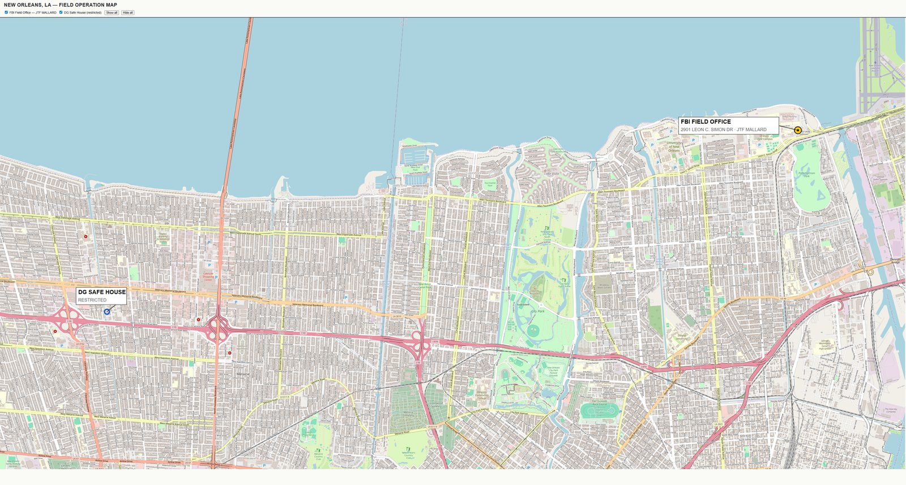
L2. Attack #3 crime scene, Jacksonville FL: the food court, one day later
- Atmosphere: The bodies and blood are gone. What remains: evidence markers standing like little tents on scrubbed tile, police tape curling in the humidity, a PA still softly playing music to an empty court, news helicopters outside. The smell is industrial cleaner over something underneath it.
- Obvious: The Agents arrive a day late, on federal re-inspection. The chalk is still there, including the sigil on the south wall, already photographed by Jacksonville PD (it's in the evidence photos, unremarked). Witness testimonials are still being collected in the parking garage.
- Hidden: The sigil is a binding mark, not gang tagging; the mutilation wounds predate the shooting and form characters; six phone videos catch the drone's shadow.
- NPCs: Det. Hurwitz (JSO, territorial about his witness) and R. Calloway (giving statements in the parking garage). Their character material is in the handouts.
- Threats: The cover-up starts here, quietly. Too many witnesses prevent a clean scrub, so the Agents must shape the scene's interpretation. They can steer report language, classify sigil photos on a narrow pretext, or route exhibits to an incurious lab. Every change is logged under their names.
- Connections: Dana Reyes, the first shooter's sister, keeps his effects in Alabama. Hale met Sheldon at her workplace without her knowledge; blackmail began the grooming, and the Owner sent him 700 miles west to delay identification. If missed, her printouts surface on Day 8 or later through an estate parcel or the task-force press line; see the Emergency Protocol.
Clues fed from here: C1-B · C1-C · C2-B · C3-B. Deployable artifacts: Handouts 2, 3.
Skill checks: Forensics (scene work)
Forensics40 · 60 · 80
- Forensics: firing positions + final trajectory from the scrubbed scenemaps the shooter's firing positions and the final wound trajectory from the scrubbed scene; recovers what the cleaners missed.
- Forensics: trained-by-video, not trained-by-expertsreads the weapon-handling evidence (brass pattern, reload points, sector control) as trained-by-video, not trained-by-experts: an amateur with hours.
- ForensicsINT 16: minute-by-minute reconstruction; flags the pause at the south wallreconstructs the whole spree minute-by-minute from brass and blood-spatter, and flags where he paused to face the south wall.
- Forensics: the progression read: each shooter shot better than the last: the younger the vessel, the deeper the binding takescompares weapon-handling across the three scenes: an amateur in Midland, a marked improvement in Baton Rouge, and a seventeen-year-old in Jacksonville who shot like a marksman: 15 rounds, 12 kills, efficient sector work. Whatever steers the hand improves with practice, or with youth. The Owner's recruiting skews young for a reason.
Export includes only visible layers. Review labels before sharing with players.
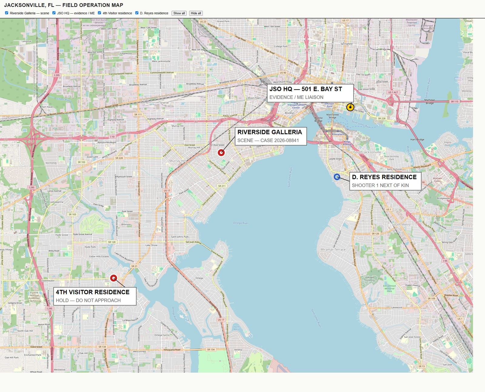
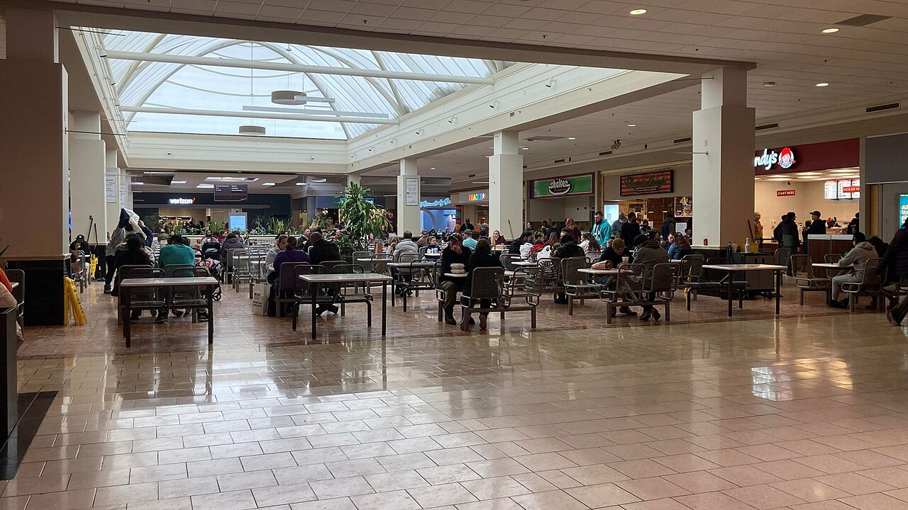
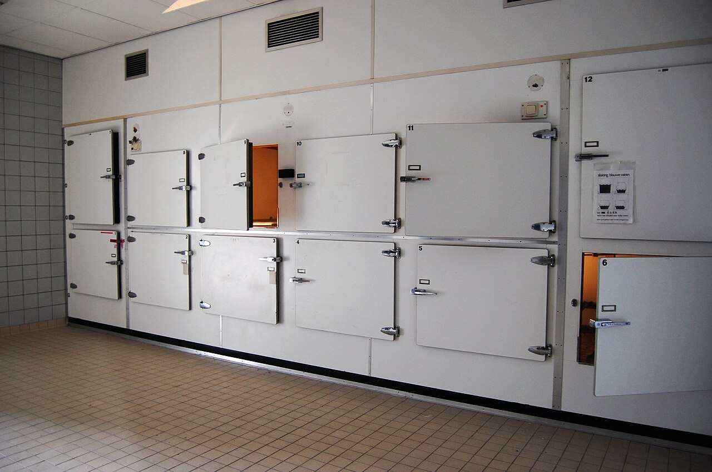
L3. "The Chapel": the idd13 Signal group
- Atmosphere: A nameless Signal chatroom with a monthly rotating passphrase; profile pictures like mildewed chapel icons; long silences punctuated by the evening verse. On video calls, the long-term members smell. They abandoned hygiene long ago, and the circle has stopped noticing.
- Obvious: The "4 / ?" memes; garrot221's kompromat dumps; token-degradation video calls; projection posts at 1:00 p.m. GMT, 13 days before each attack.
- Hidden: The Owner vets newcomers through lackeys. The passphrase rotates monthly; garrot221 might leak it, or the Agents can lift it from his devices.
- NPCs: garrot221, the loudest voice; the Owner (ork3rd) posting verses through lackeys; and the Fourth Visitor, whose silence in the final days signals the countdown.
- Threats: Infiltration exposes an Agent's real identity to a circle that rewards degradation with status. If detected: the passphrase rotates early; garrot221 vets newcomers, alternating needy warmth with accusation; the Owner plants a fake "fifth visitation" rumor. A suddenly cautious Chapel means the Agents' cover is blown.
- Connections: All Chapel-related clue paths lead here. The Owner uses the group to recruit, instruct, and monitor members.
Clues fed from here: C2-C · C4-B · C4-C · C5-A · C5-B · C5-C. Deployable artifacts: Handouts 8, 9.
L4. The RV (mobile endgame)
- Atmosphere: A battered Class-C RV moving along the TX→FL corridor, using public Wi-Fi at gas stations and truck stops. Reality feels slightly wrong within a block of it: a smell like a butcher shop's drain, birdsong that stops when it passes.
- Obvious: Gas-station CCTV and traffic cameras record a trail of sightings. At night the drone returns.
- Hidden: The inside is a squalid observation post, not an altar. Sticky monitors cover the walls; food containers, burner phones, and dash-tripods cover every surface; a drone recharges in the sink. The viewing chair is worn to the frame. The Owner's attention is the ritual, not the arrangement of objects. Shed skin and chewed foam show his transformation. Block-labeled tape boxes hold projections, pledges, and reenactments.
- NPCs: Just the Owner. The RV seats no congregation.
- Threats: The Owner is frail, but killing him triggers the mark. During the fourth shooting, his watching advances the working moment by moment, whatever the Agents do to him afterward.
- Connections: The final confrontation.
Clues fed from here: C6-A · C6-C, and every loose end. Deployable artifact: Handout 15 (RV interior).
Export includes only visible layers. Review labels before sharing with players.
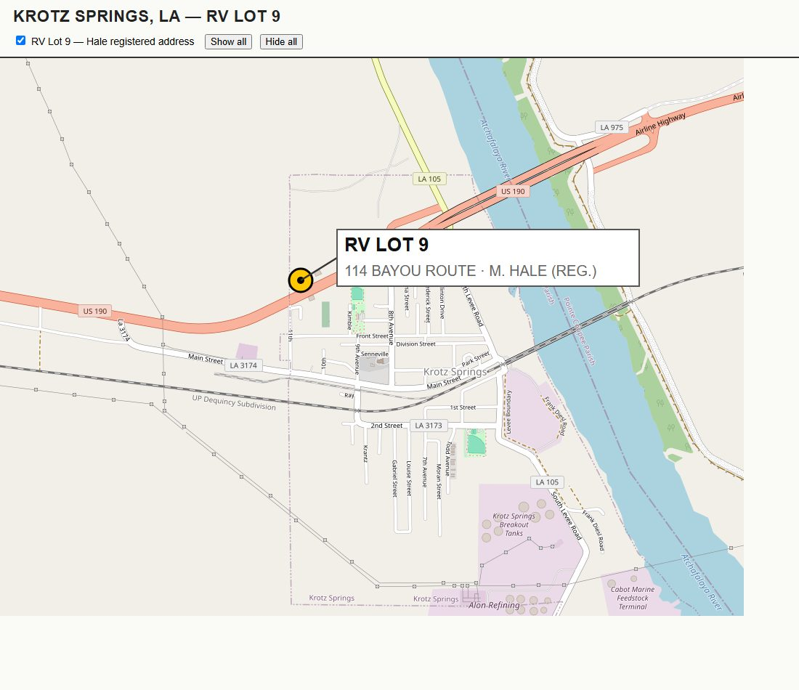
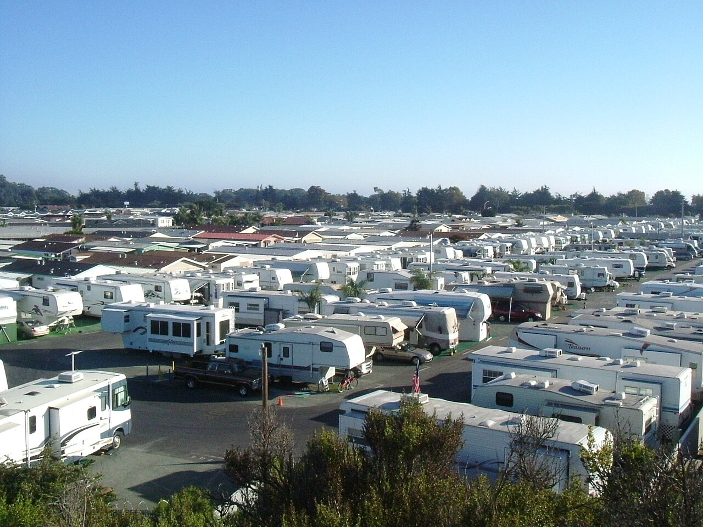
L5. The Safe House (DG base of operations)
- Atmosphere: A two-story townhouse in a suburban HOA community, heavy curtains drawn, air stale with disuse. DG hasn't used it in years. The lawn technically violates HOA covenants.
- Obvious: A modest Green Box: burner laptops, a clean printer, a lockbox with cash and credentials, laminated HOA pool rules from 2019. The Agents' own equipment is staged here too: imagers, cables, and a decent monitor. They can run anything available in the L1 evidence room without using task-force systems.
- Hidden: Sound carries through the shared wall; the neighbors notice comings and goings. Provenance: Program-owned for years, a disused Katrina-era safe house and the Outlaw contribution to this operation (Lore Implications). The rent is paid years at a time, in cash. The owners have never asked a question and consider it the best tenancy they have ever had.
- NPCs: No DG personnel. The only other presences are the HOA board and the neighbor beyond the shared wall.
- Threats: Ordinary exposure: a nosy HOA board and a neighbor who notes the curtained windows.
- Connections: Where the Agents plan, store kompromat safely, keep and analyze evidence away from the L1 audit trail, and decide what Doyle is allowed to find.
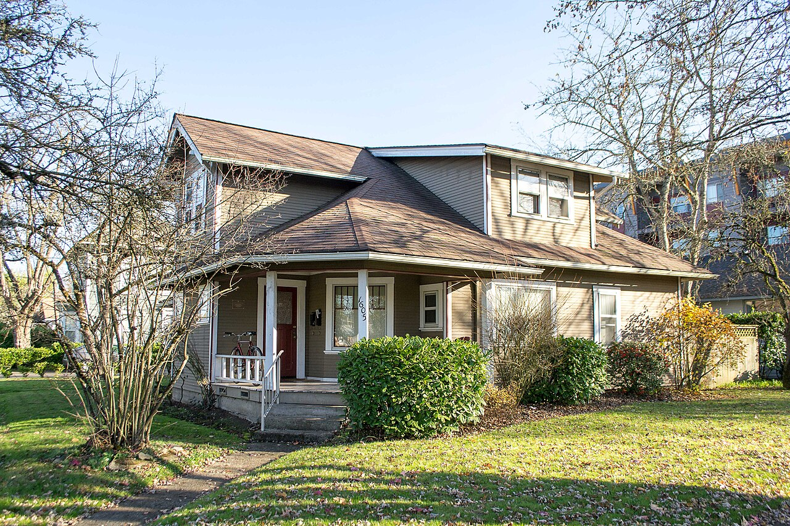
Federal tracking tools: L1 lists the available tools and the rule for traces left by failed requests. Each clue check names the tool it uses. At the safe house, the cell can use these tools without going through task-force systems.
Export includes only visible layers. Review labels before sharing with players.
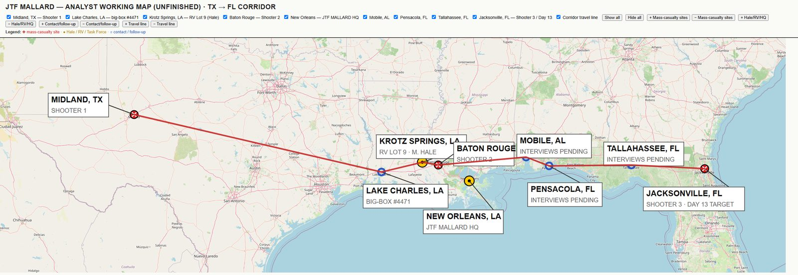
Export includes only visible layers. Review labels before sharing with players.
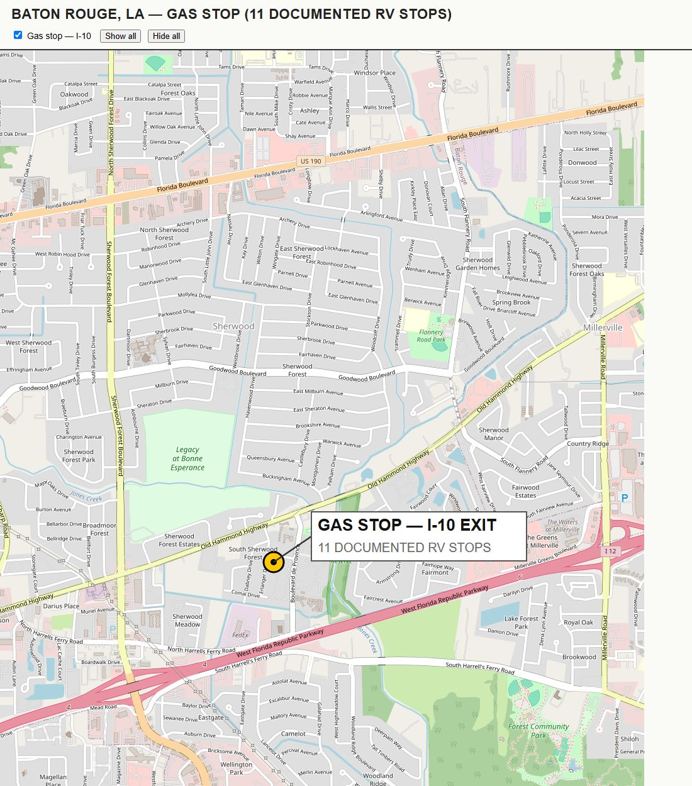
NPCs
"ork3rd" / Marcus Hale, the Owner (Antagonist)
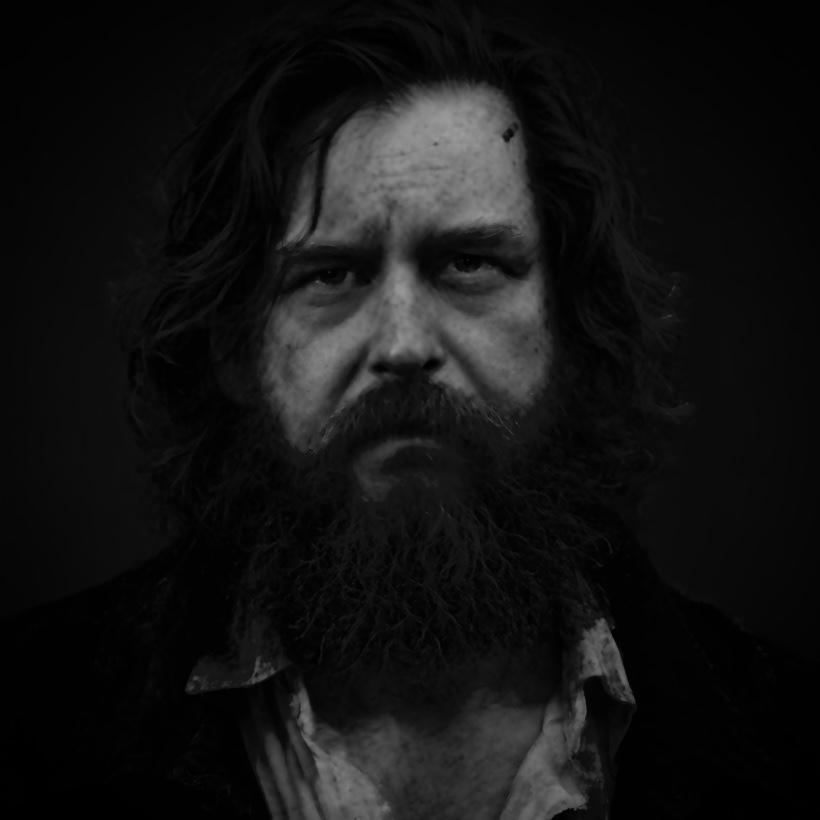
- Appearance: Six-foot-one, white. At the Tampa gun show, witnesses described a fat white man in a mask and sunglasses buying the fourth rifle with cash. Older photos show a paunchy, bearded IT contractor; current photos show him losing weight, with a jaw that closes wrong and eyes that are too wet. He is mid-transformation, at stage three of four.
- Background: The IT-contractor years are two years behind him; he has not done a day of that work since the circle became his life. The circle feeds and funds him: member tributes, small cash streams, the road itself. A task-force financial read would call it a blackmail ring. That is the mundane shape of tribute.
- Motivation: He is incapable of doubt. He believes reality is the dream of a dead god and that he understands it better than anyone alive. He sees himself as the architect of a coming national panic and the god's favored witness. In interview he is calm, coherent, and certain; his cosmology has an answer for everything. The delusion deepens the further he gets from 1:00 p.m. GMT, but his composure never breaks.
- Secret: The delusion is a shelter. At the 13th hour, 1:00 p.m. GMT, Y'golonac rides him, and he has come back to himself in public places having violently debased himself. He has organized his entire drifting life around never being caught outside, on camera, or in custody when the hour strikes. If the Agents hold him through it, they will see what is actually driving the RV.
- Attendance: He is there. Every shooting, he watches in person from the treeline, roughly 5 km out, which is why every site is chosen for a clear day with wooded ground nearby. He wants the sky open and cover close; being near the work is devotional. The drone is his, the working's witness-feed, lens over the hero at the climax, but the drone is not why he comes.
- Knowledge: Everything. He will lie about being anything but a facilitator.
- Disposition: Contemptuous patience with feds; genuine warmth with his circle.
- "You're not investigators. You're parishioners who haven't been called yet."
- Stats: Frail human (low STR/CON); sorcerer with rituals suited to observation and escape; SAN 0. If killed: sacrificial mark triggers, Avatar of Y'golonac, stat block below.
Feeds: C2 · C3 · C4 · C5 · C6. Everything runs through him. See the critical trap.
Skill checks: containment (the critical trap)
POW
- POW: stay in the room, hands on him, through the 13th hourhold him through the 13th hour: the raw determination to stay in the room, hands on him, while Y'golonac rides him and he violently debases himself, and to keep the rest of the team acting with you when every instinct says run.
STR
- STR: restrain him without killing him: if he dies in the grapple, the mark triggerstake the frail sorcerer down and restrain him without killing him. He's frail. The risk isn't losing the grapple; it's that he dies in it and the sacrificial mark triggers. If a full inhuman struggle breaks out, zero-lethal control is the same STR read, harder.
Calling the cavalry: JTTF credentials buy HRT, SWAT, perimeter, and air support. A competent tactical breach kills the frail Owner; if the mark triggers, the avatar manifests on live federal video and every filmed death becomes a sacrifice. Use conventional force against his mundane vulnerabilities: receipts, warrants, traffic stops. Keep 13th-hour containment within the cell.
If the Owner is removed: idd13 persists as a post-charismatic group: moderators maintain the rituals, members repeat his language, and his dependencies outlive him (cf. Miller, When Prophets Die; see C2). Traffic declines and the Bureau closes its file, but the working continues.
Avatar of Y'golonac
If the sacrificial mark completes, Marcus Hale becomes this terrible incarnation of the Great Old One. The entry is reproduced below for convenience; see the Handler's Guide for the full write-up.
God-infested flesh.
AURA OF POWER: Any human present when Y'golonac manifests (either in its native form or as an avatar in Y'golonac-form), even from the first turn of the change, is automatically at −20% on all rolls (except SAN). A character who fails the SAN roll for encountering Y'golonac cannot act for 1D6 turns, instead goggling in abject terror at its monstrous form.
AVATAR: Y'golonac can choose to manifest fully in a human host. In so doing, it immediately inflicts SAN loss on witnesses and projects its AURA OF POWER. The avatar's body bloats, consumes its head, splits through its clothing, and begins to glow. For the first three turns, the transformation is still incomplete and ordinary attacks harm it. If it takes 20 damage, the transformation stops and the avatar is discorporated. After that, the human avatar is immune to most attacks, but can be discorporated by a successful attack with a Lethality rating of 10% or higher or by various hypergeometric principles (see DISMISSAL). Discorporation leaves behind the human corpse of the avatar. Y'golonac can withdraw at any time, leaving the human host unchanged but for losing 1D20 SAN from the unnatural.
DISMISSAL: Certain hypergeometric principles allow Y'golonac to be dismissed or banished from a human host. This requires access to or knowledge of a ritual that dismisses Y'golonac, a successful activation roll, and the permanent expenditure of 1 POW.
FEEDING: The palms of Y'golonac's hands, whether in its true form or in an avatar, become maws ringed with shark-like teeth that inflict 1D8+2 points of damage, once per turn, unless the victim makes a Dodge roll. A victim who loses half or more Hit Points to that mauling becomes subject to possession by Y'golonac at any time (see AVATAR), and finds that while their Hit Points heal, the bloody wounds never do.
POSSESSION: Y'golonac most often works through possession of a human host that its influence has deeply corrupted (see FEEDING and THE WORDS). Y'golonac uses the body like a puppet in which it is undetectable unless it speaks through the host in its terrible, leering, alien, impossibly deep voice. When the host attempts a stat or skill test, Y'golonac can spend 1D4 of the host's WP to change the roll to "01" for a critical success. When the host takes damage, Y'golonac can spend 1D4 of the host's WP to reduce the damage by that many Hit Points. If the host runs out of WP or HP, or at any other time, for that matter, Y'golonac can manifest more fully as an AVATAR.
THE WORDS: Y'golonac usually gains entry into the human world through a particular passage in the 12th volume of the Revelations of Gla'aki. A human being who reads that book can become a possessed vessel of Y'golonac (see POSSESSION). Whether this fate befalls anyone who reads enough, or only those whose cruel predilections predispose them to Y'golonac's influence, is unknown.
SAN LOSS: 1D6/1D20.
"garrot221" / Garret Marmot-Johnson, longtime member (Witness / pressure point)
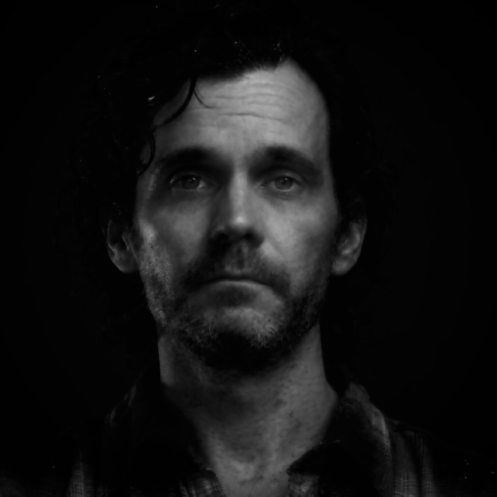
- Appearance: Late 30s, warehouse job, crooked front tooth, posts compulsively between 2–4 a.m.
- Motivation: Status within the circle; consumed by sexual jealousy of the shooters: he wanted to be the fourth. He mocks the dead shooters even as he hoards their kompromat.
- Secret: He has met the Owner in person twice and knows the RV's usual corridor.
- Knowledge: C5 and the testimony path in C6 (C6-B). He is the operation's most informative and least reliable source. His influence with recent initiates makes him useful and dangerous to approach.
- Disposition: Suspicious of feds and intoxicated by importance. He will cooperate for status, protection, or revenge, especially if treated as the Owner's chosen one. He wants recognition, not absolution, and feels no remorse for the shooters.
- "You don't get it. He watched them. Nobody ever watches me."
- Stats: Standard civilian; small pistol he fantasizes about using.
"T." / Tyler Pruitt: The Fourth Visitor
- Appearance: Mid-20s, works in stock at a Jacksonville distribution center, still lives with his mother. He has been an idd13 member for less than a year, so he chats normally: the circle's way of saying he hasn't been hollowed out yet. He carved the sigil into his armpit two weeks ago. He practices his pledge in his car, camera on, parked facing the mall.
- Motivation: He believes the fourth visitation will finally make ork3rd watch him the way he watched the others. He chose the same food court on purpose: same altar, bigger congregation.
- Secret: He wrote the Ferro family a letter of apology, sealed, stamped, never mailed: it sits in his glovebox, dated after the attack. He knows he will not survive it and finds that noble.
- Knowledge: Nothing about the unnatural; everything about the venue, the package contents, and the date.
- Disposition: Polite, calm, and ordinary. He will not be talked down once he's inside: the Owner is watching.
- "I know how it sounds. But when he watches, you're not alone in there. Nobody ever watched me before."
- Stats: Civilian + AR-style rifle, soft armor; statistically dead within minutes of going live.
His letter is Handout 14. The blank tape spine labeled "4" is Handout 15.
Skill checks: Firearms (Day 13)
Firearms60 · 80
- FirearmsCON 12: maintain accuracy under fire; exploit the amateur gapmaintains accuracy under fire and exploits Pruitt's lack of combat experience despite his good gear and range training. This tests a steady nerve, not knowledge.
- FirearmsDEX 16: win the positioning fight; moving and shootingrecognizes the pattern from Pruitt's car practice and moves to the angle that stops him fastest while continuing to shoot.
Playing Pruitt: he wants to be seen. Don't diagnose him in the text. Let the Agents hear his loneliness, hunger for an audience, relief from shame, compulsive rehearsal, and identification with the group. He is reachable but cannot be argued out of the attack. Attention is the only opening.
Dana Reyes: sister of shooter #1 (Victim)
- Appearance: 40s, school administrator, the family's spine; keeps her brother Sheldon's effects in labeled boxes she can't throw away. She lives in Alabama, where Sheldon was local until the Owner sent him west.
- Motivation: Wants to understand what was done to her brother; wants someone to be punished, and is furious at the feds for "not investigating this," because the one time she pushed, the trail went dead. She doesn't know that was Delta Green.
- Secret: She has read the chat logs. She knows what he said, "he is my owner," and hasn't told the FBI because it makes her brother sound complicit.
- Knowledge: C3-B testimony, the printouts (C2-B), the packages.
- Disposition: Wary, grieving, sharper than the Agents expect. If mistreated, she goes to the press: the cover-up made personal.
- "You buried my brother's file once. You don't get to come back now and call it a fresh start."
- Stats: Civilian. If she goes to the press, she can blow the Agents' cover.
SAC Karen Doyle: FBI task-force lead (Obstacle)
- Appearance: 50s, field jacket indoors, reads case files at the gym.
- Motivation: Catch the network before the fourth attack. Serve the Bureau she believes in.
- Secret: She has flagged the "counterterror experts" for audit. Inspection Division runs the formal review, and her office pulls the daily logs. Their searches don't match their profiles, and the chain of sponsorship above their detachment orders disappears into layers of cutouts. She cannot identify the sponsor yet. Her hostility aims past the Agents at whoever signed them. (What she can actually see of the sponsorship: Lore Implications.)
- Knowledge: Everything the task force has, including anything the Agents failed to hide.
- Disposition: Professional, incorruptible, fair. She can become an asset, a threat, or the person the Agents must deceive through the final hour.
- Checkpoints (Segments 4 · 8 · 11): use the current-exposure scenes beside the clock. Day 4 brings questions or formal review; Day 8 demands an account; Day 11 offers support at exposure 0–2, requires Bureaucracy or HUMINT at 3, and brings obstruction at 4. Exposure never decreases.
- Endgame: After the attack, the Agents brief her with the audit binder on the table. Their conduct and the attack's outcome decide whether the cover-up holds. Exposure above 4 means PROSECUTION.
- "Funny. Every trail you guys touch goes cold. Explain that to me."
- Stats: Veteran federal agent, high Alertness, Bureaucracy, Firearms.
Running Doyle: use the numeric scenes and exposure log beside the Mallard Clock. Off-books work adds no exposure; only the four listed triggers raise it.
Handouts 1–17
Seventeen handouts, in deployment order. Each item begins with a bracketed Handler note: read it, don't hand it over. Print pages separately and hand out at the moment of discovery. Each handout below carries a prop link that opens the finished print prop in the image viewer, plus a print PDF link to the press-ready US Letter file.
Deploy: session start, with the Hook. Two sheets: the cover memo on FBI letterhead, and the real orders. The detachment letter authorizes assessment support and evidence custody under JTTF rules; it does not give general warrant power; every search the Agents run still needs its own authority.
1. TASKING PACKET
prop: p. 1

FEDERAL BUREAU OF INVESTIGATION: MEMORANDUM
TO: Joint Task Force MALLARD (Jacksonville, New Orleans, Baton Rouge)
FROM: Office of the Deputy Assistant Director, Counterterrorism Division
RE: Expert detachment: counterterror assessment
Pursuant to the Attorney General's directive on coordinated mass-casualty threat assessment, the following detailees are assigned to JTF MALLARD as counterterror subject-matter experts, effective immediately. Detachment originates from JTF MALLARD, FBI New Orleans; [AUSA, M.D. Fla.] is designated legal contact. Detailees hold task-force credentials for assessment support and custodial access to seized evidence and digital exhibits: the detachment authorizes evidence custody under JTTF rules and confers no general warrant authority. Reporting chain: SAC K. Doyle, with administrative oversight through this office.
/s/ [signature illegible]
HANDLER NOTE: BURN AFTER READING
Unnatural tripwire match. Aklo spoken on camera, three scenes, same drone. This is the idd13 pattern: "i deserve death 13." You are embedded, not in charge. The Bureau must not find the carving or the footage.
Tasks: identify the circle. Stop the fourth. Contain the witness, alive if possible. Leave nothing another agency can follow.
Your signature is on the orders. /s/ C.
Deploy: at L2 (Jacksonville scene), when Agents examine the south wall or the evidence photo binder. Hand over as a printed photo.
Path: feeds C1-C (the chalk sigil): Occult 40 · 60 · 80 · Forensics 60
2. EVIDENCE PHOTO: THE SIGIL
prop: view

JACKSONVILLE SHERIFF'S OFFICE: EVIDENCE PHOTO
Case 2026-08841 · Riverside Galleria · Photo 114 of 203
[The photo: pale cinderblock, south-facing service corridor behind the food court. Evidence scale marker propped at the base. Chalk, fresh, over dust, a crude mark maybe a foot across: an open hand, palm out, fingers together and pointing up, except that the palm is a wide-open mouth, teeth bared, tongue curled; the thumb and little finger hook outward like horns. A smaller companion mark, a hooked staff with crossbars, sits beside it. Drawn as if by someone who had seen it many times but never been taught to draw it. The chalk lines press hardest in the mouth, deep enough to flake.]
Photo log note (handwritten): "Gang tag? Note same mark: photos 89 (Baton Rouge scene ref'd by FBI) and 51 (Midland). Forwarded to gang unit."
Deploy: at L2, from the statement binder or Hurwitz's interview.
Path: feeds C1-B (the watching): HUMINT 40 · 60 · 80 · Criminology 40
3. WITNESS STATEMENT TRANSCRIPT
prop: view

JACKSONVILLE SHERIFF'S OFFICE: WITNESS STATEMENT (EXCERPT)
Case 2026-08841, Witness: R. Calloway, pretzel kiosk employee
DET. HURWITZ: —and where were you when you first heard the shots?
CALLOWAY: By the register. He came past the kiosk before, maybe five minutes before. He was talking. Not on the phone. Like — to nobody.
HURWITZ: What was he saying?
CALLOWAY: I don't — it wasn't English. It sounded like he was practicing something. Then later, when Officer [redacted] had him cornered by the carousel, he started screaming. He said — this part I remember exact — he said "he's watching, he always watches." Then he laughed and put the gun under his chin. That's — that's it. That's all I want to say.
Deploy: at L1, when Agents lawfully pull the autopsy file.
Framing: the wound is older than the attack. He carved it himself and hid it where only he and the group would know: a coerced promise made under shame and surveillance. Psychological training reads a binding act under pressure; occult training reads ritual sealing. Neither interpretation proves the other.
Path: feeds C3-A (carved sigil): Medicine 40 · 60 · 80 INT 16 · Forensics 40 · 60 CON 12 · 80 INT 16 · Computer Science 60. Wound-cluster characters also feed C4-A.
4. ME PRELIMINARY REPORT
prop: view

OFFICE OF THE MEDICAL EXAMINER: PRELIMINARY REPORT (EXCERPT)
Decedent: W. Ferro, 17, Case 2026-08841
FINDINGS, in summary:
- Cause of death: contact gunshot wound, submental. Self-inflicted, per scene reconstruction.
- Antemortem sharp-force injuries: approximately forty (40) incised wounds to forearms, chest, and tongue, organized in repeating clusters. Several clusters form characters which do not correspond to any writing system known to this office; photographs forwarded to [redacted: FBI JTF].
- Of note: a carved symbol, approximately 4 cm, located in the right axilla (armpit). Incised antemortem, estimated 2–3 weeks healed. Unusual placement and self-infliction noted. Same symbol observed in decedent photography from two prior incidents (Midland TX; Baton Rouge LA) per JTF cross-reference.
- Toxicology pending.
Deploy: at L1, during device forensics on shooter #3's phone. The extraction report frames the chat excerpts.
Custody frame (Handouts 4–5): devices are imaged and hashed before exam; CART reports cite exhibit numbers (this phone is Exhibit 14-C). The phone is searched under warrant; provider records require a separate subpoena or order.
Path: feeds C2-A (the courtship): Computer Science 40 · 60 · 80 INT 16 · SIGINT 60
5. SIGNAL FORENSIC EXTRACTION: THE COURTSHIP


FBI COMPUTER ANALYSIS RESPONSE TEAM: EXTRACTION SUMMARY (EXCERPT)
Exhibit 14-C: cellular device, decedent W. Ferro
Device contains encrypted messaging application session (Signal), group identifier [hash], display name: "the chapel", membership 41 accounts. Session join date: 14 months prior to incident. Per CART standard practice: Signal supplies no content or account data from its servers; all returned data is recovered from local device storage under the search warrant. Earliest direct messages, user ork3rd:
ork3rd: you found us because you were looking. what were you looking for
wferro88: i dont know. something that isnt this
ork3rd: good answer. the others lie here. you didnt
[Later excerpts, flagged by CART as "grooming-pattern consistent":]
ork3rd: you have something to be ashamed of. everyone does. show me yours and i will show you something worse
[MEDIA: 2 images, transmitted 03:11]
[MEDIA: 1 image, transmitted 03:14]
ork3rd: see? nothing you are is new to me. nothing you are is beyond use
CART analyst note: "Trade pattern across all three decedent devices: subject 'ork3rd' exchanges compromising imagery with new members in first weeks of contact. Appears to be an initiation rite. Recommend identity work on 'ork3rd': accounts are burned within 90 days."
Deploy: deeper into the same extraction, or through Dana Reyes' printouts from shooter #1's device. SAN 0/1 for reading the full log aloud.
Framing: this is coercive control, not conversion. Affection, status, shame, secrets, and threats create dependency. Ask what he depended on and what he feared would be exposed, not who convinced him.
Path: feeds C3-A (the surrender): Medicine 40 · 60 · 80 · Forensics 40 · 60 · 80 · HUMINT 40 · 60 · 80 · Computer Science 60.
6. THE DEGRADATION LOG: "YOU ARE MINE. SAY IT."


EXHIBIT 14-C: CONTINUED. Direct messages, wferro88 / ork3rd, final 30 days.
FRI, FEB 20, 2026
ork3rd: today's task. you will go to the restroom at work. you will [REDACTED: full text in exhibit]. you will send me proof by 6.
wferro88: why do i do these
ork3rd: because you want to know how far down you go. everyone wonders. i am the only one who shows you. proof by 6wferro88: [MEDIA: 0:41 audio]
ork3rd: good. deeper now. say it
wferro88: i am yours
ork3rd: no. the whole thing
wferro88: i am yours. you own me. say it back
ork3rd: i dont say it back. i dont have to
FINAL EXCHANGE, TUE, MAR 3, 2026 — 11 days before incident:
ork3rd: You are mine. Say it.
wferro88: i am yours [MEDIA: 0:12 audio, the same words, spoken, crying]
ork3rd: and now the small ceremony, when you are ready. you know where. the knife is in the package.
CART note: "Voice memo 0:12 transcribed; matched to decedent. Grooming escalation consistent across all three devices. Final message accompanied by parcel tracking (see Exhibit 22)."
Deploy: when Agents access the flagged footage, likely early at L1. This document started the operation. SAN 0/1 for viewing is your call; the transcript alone is deeply wrong.
Path: feeds C4-A (the pledge): Occult 40 · 60 · 80 · SIGINT 40 · 60 · 80
7. THE AKLO PLEDGE: TRIPWIRE MATCH
prop: view

DELTA GREEN · EYES ONLY · TRIPWIRE MATCH / AUTOMATIC DISTRIBUTION
Source: FBI JTF MALLARD evidence, decedent device, uploaded 00:30 prior to incident
VIDEO, 0:47. Parking structure, Riverside Galleria. Decedent seated in vehicle, facing phone camera, front facing, dash-mounted. Transcript:
[00:02] [unintelligible: vocalization, estimated 90 seconds' rehearsal prior to clip start]
[00:11] DECEDENT: [language: AKLO, transliteration approximates:] "y'kaa h'vorl nafl'ghft. I AM YOUR TOOL. YOU ARE MY MASTER."
[00:19] [decedent touches the camera lens, gently, twice]
[00:24] DECEDENT: "watch me watch me watch—"
[00:27] [exits vehicle]
MATCH LOG: AKLO spoken on camera, mass-casualty context: matches tripwire criteria of 19[redacted] and 20[redacted]. Prior two incidents: pledge recorded weeks in advance, stored on device. This decedent recorded his 47 minutes before. JTF is treating footage as gang-related. It is not gang-related.
Deploy: when Agents monitor the Chapel (L3) or review CART captures. Print as a screenshot collage.
Path: feeds C5-A (garrot221’s grievance) and C5-B (the “4 / ?” memes): SIGINT 40 · 60 · 80 · Computer Science 40
8. MEME COLLAGE: "4 / ?" AND GARROT221'S DUMP
prop: view

[SIGNAL: "the chapel", captured thread, pinned]
[image: crudely drawn mall food court. four stick figures lying down. a large question mark over a fifth.]
@mothmother: 4???????
@id-id-ides: 4 / ?
@id-id-ides: 4 / ?
@id-id-ides: 4 / ?
@vessel11: patience is also worship
[captured thread, 2 days later, user garrot221]
@garrot221: [MEDIA: video 2:03. Bathroom mirror footage of the Baton Rouge shooter, weeping, dated three weeks before that incident. Posted with no comment.]
@garrot221: look at him. LOOK. he got to be watched and i get to sit here
@garrot221: i was here first. i said the words first. wheres MY package
@vessel11: delete this
@garrot221: make me. or ask him to make me. he wont. im the one who stays. im the one who WATCHES the watchers
Analyst margin note: "garrot221: real-world ID in progress. Emotional leverage candidate."
Deploy: while the Agents monitor the Chapel (L3). Day 7 matches Clock Segment 7. Let players notice the 13th-hour break: no image, no typos. Dating the torn shipping label requires no roll; interpreting the sigil requires Occult 60 / SIGINT 80. Print the 13th-hour post on its own slip.
Thread texture: Days 1–3 count the working's phases in public. Prepare the Day 4 "4 / 4" post in advance; it marks a phase, not the attack. garrot221's grievance plays out in the replies, and ork3rd's motel comment places him on the road.
Path: feeds C5-C (the countdown): Occult 40 · 60 · SIGINT 80
9. THE VERSE MEMES: TWELVE DAYS AND THE 13TH HOUR
screenshots — full run, days 1–13:

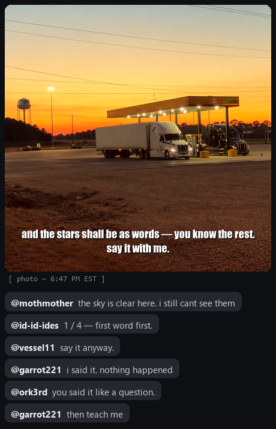

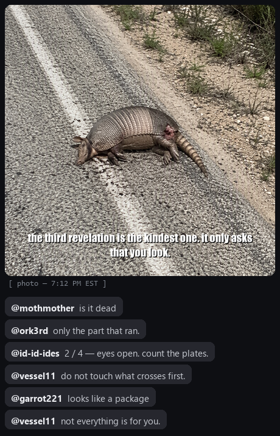

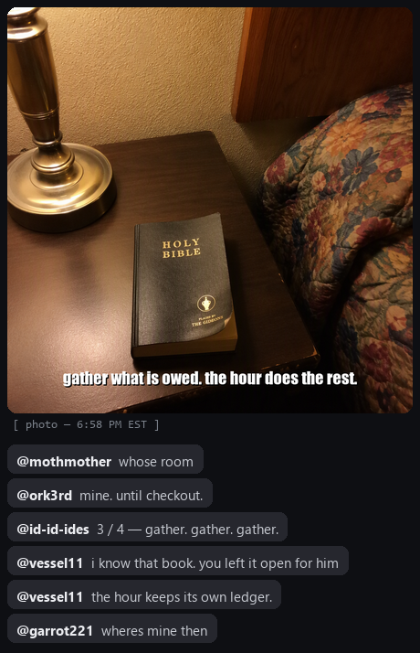

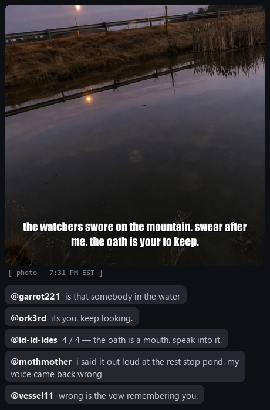

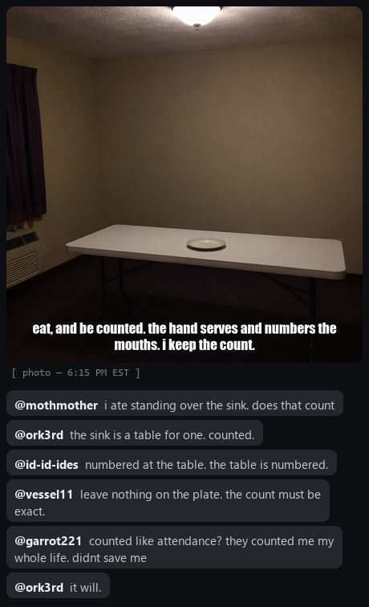

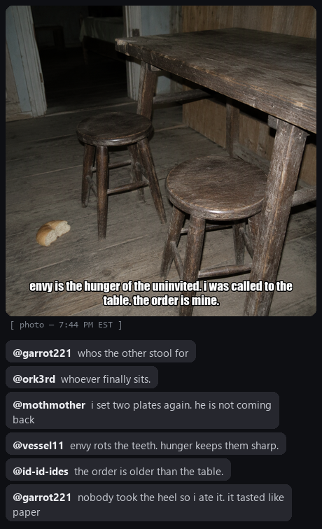

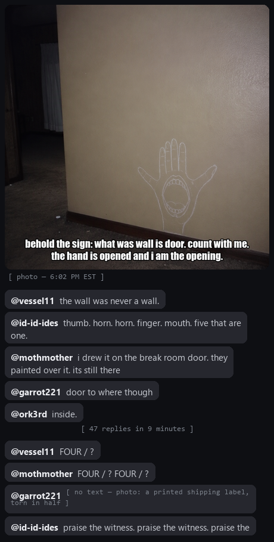

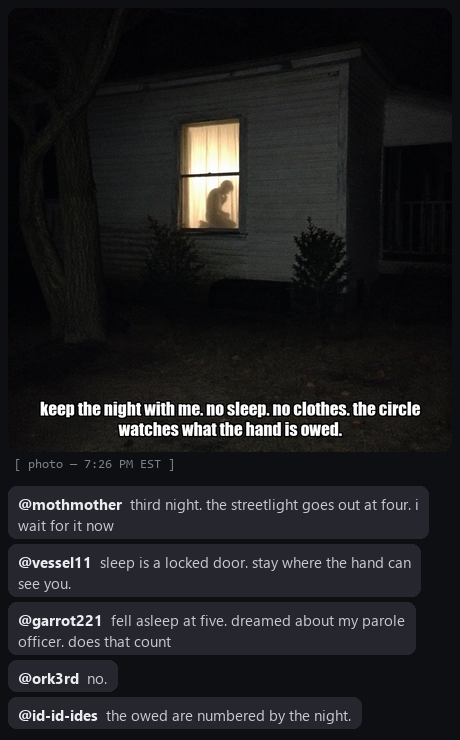

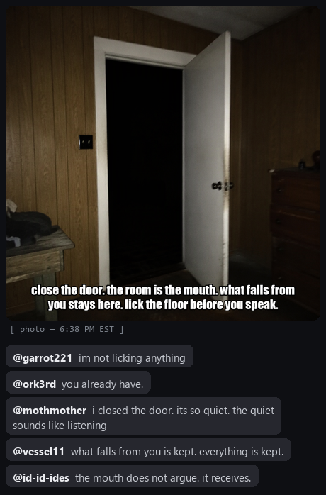

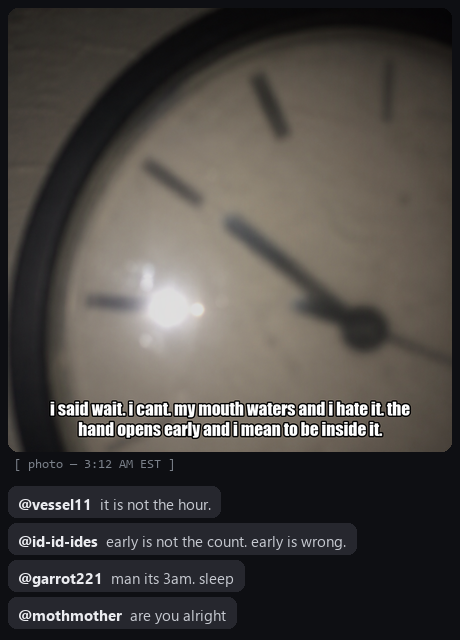

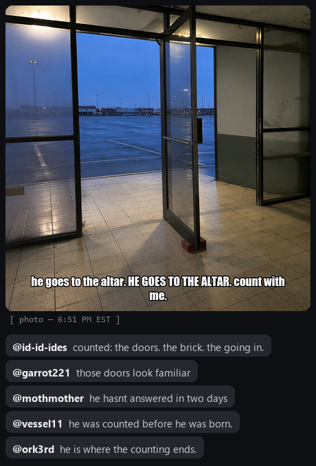

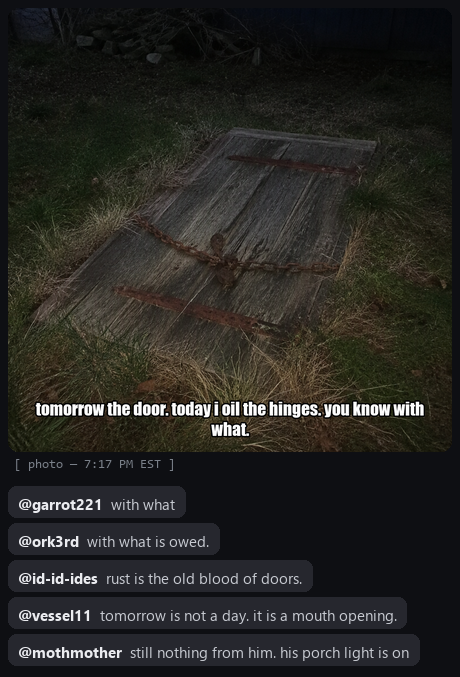

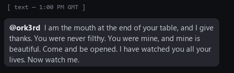
[SIGNAL: "the chapel", user ork3rd, daily, posted ~6–8 p.m. EST]
DAY 1: [image: sunset over a truck stop, a rig idling in the empty lane. caption:] "and the stars shall be as words — you know the rest. say it with me."
[thread — Day 1:]
@mothmother: the sky is clear here. i still cant see them
@id-id-ides: 1 / 4 — first word first.
@vessel11: say it anyway.
@garrot221: i said it. nothing happened
@ork3rd: you said it like a question.
@garrot221: then teach meDAY 2: [image: dead armadillo on asphalt, belly to the sky. caption:] "the third revelation is the kindest one. it only asks that you look."
[thread — Day 2:]
@mothmother: is it dead
@ork3rd: only the part that ran.
@id-id-ides: 2 / 4 — eyes open. count the plates.
@vessel11: do not touch what crosses first.
@garrot221: looks like a package
@vessel11: not everything is for you.DAY 3: [image: a Gideon Bible on a motel nightstand, bedside lamp lit, floral bedspread. caption:] "gather what is owed. the hour does the rest."
[thread — Day 3:]
@mothmother: whose room
@ork3rd: mine. until checkout.
@id-id-ides: 3 / 4 — gather. gather. gather.
@vessel11: i know that book. you left it open for him
@vessel11: the hour keeps its own ledger.
@garrot221: wheres mine thenDAY 4: [image: a still pond at dusk, a face just beneath the surface. caption:] "the watchers swore on the mountain. swear after me. the oath is your to keep."
DAY 5: [image: a bare table in an empty room: one plate licked clean. caption:] "eat, and be counted. the hand serves and numbers the mouths. i keep the count."
DAY 6: [image: two stools at a plank table, a heel of bread on one. caption:] "envy is the hunger of the uninvited. i was called to the table. the order is mine."
DAY 7: [image: the blank beige wall. in the corner, chalk: the hand — palm out, the palm a mouth, thumb and little finger hooked like horns. caption:] "behold the sign: what was wall is door. count with me. the hand is opened and i am the opening."
[Thread response, 47 replies in 9 minutes:]
@vessel11: FOUR / ?
@mothmother: FOUR / ? FOUR / ?
@garrot221: [no text, media: photo of a printed shipping label, torn in half]
@id-id-ides: praise the witness. praise the witness. praise the
[The chapel, days 8–12:]
DAY 8: [image: a window at night, lit from inside by nothing visible, a silhouette kneeling. caption:] "keep the night with me. no sleep. no clothes. the circle watches what the hand is owed."
DAY 9: [image: a door standing open on darkness. caption:] "close the door. the room is the mouth. what falls from you stays here. lick the floor before you speak."
DAY 10: [posted 3:12 a.m.] [image: a clock face photographed too close to read. caption:] "i said wait. i cant. my mouth waters and i hate it. the hand opens early and i mean to be inside it."
DAY 11: [image: mall doors at dawn, one propped open with a brick. caption:] "he goes to the altar. HE GOES TO THE ALTAR. count with me."
DAY 12: [image: a cellar door in grass, chained, the chain gone to rust. caption:] "tomorrow the door. today i oil the hinges. you know with what."
[13th hour, posted 1:00 p.m. GMT: no image, no caption, text only]
"I am the mouth at the end of your table, and I give thanks. You were never filthy. You were mine, and mine is beautiful. Come and be opened. I have watched you all your lives. Now watch me."
Deploy: at L1, when Agents overlay the bystander videos. Print three captioned frames side by side; let players spot the match.
Path: feeds C1-A (one drone, three scenes): Computer Science 40 · 60 · 80 INT 16 · SIGINT 40 · 60 · 80
10. DRONE STILLS: THREE SCENES, ONE DRONE
prop: view

FBI JTF MALLARD: EXHIBIT COMPARISON (EXCERPT)
Source: bystander device videos, scenes 1–3
| FRAME A: Midland, TX | FRAME B: Baton Rouge, LA | FRAME C: Jacksonville, FL |
|---|---|---|
| [skyline over strip-mall parking lot, timestamp 14:02] | [stadium concourse, timestamp 19:44] | [Galleria facade, timestamp 13:58] |
| [upper center: small quadcopter silhouette against cloud, ~60 m] | [upper center: same silhouette against stadium light, ~60 m] | [upper center: same silhouette, against cloud, ~60 m] |
| Video owner (A, crying, audio): "—why is there a drone, who flies a drone at a—" | Video owner (B, running): "it's filming, it's filming us—" | Video owner (C): "that was there before. that was there before the shots." |
Analyst note: "Airspace requests: none filed at any scene. All three units: same airframe class, same lighting configuration. Estimated unit cost under $900, retail."
Deploy: in the evidence room (L1) or RV endgame (L4). Unnatural roll and SAN 0/1 on handling. The photo shows the etchings without interpreting them.
Framing: treat the lenses as ritual objects, not gadgets. The examiner sees odd etched parts; the occult-trained Agent sees an object consecrated, carried, and touched in a fixed sequence (cf. Wilburn, Materia Magica; Faraone and Obbink, Magika Hiera). What the lens does remains beyond human skill.
Path: feeds C4-A (the ritual lens): Occult 40 · 60 · 80 · Forensics 60.
11. THE DRONE: EVIDENCE PHOTO
prop: view

FBI EVIDENCE: PROPERTY PHOTO
Consumer quadcopter, recovered at scene 2 (Baton Rouge) – logged as found property during the stadium sweep; flagged by the three-scene comparison
[The photo: the little drone on a bench, disassembled per CART procedure. The airframe, motors, and board are standard consumer hardware, retail-class. But the gimbal camera is not the factory part. Its lens housing is hand-machined brass, lightly tarnished, screwed in over the OEM mount. Etched into the brass, in lines fine as a knife tip: nested text that is almost the block alphabet of a personal cipher and almost not text at all. The same hand-and-mouth motif recurring at three scales, the smallest deep inside the lens seat where no one would ever see it who didn't take the drone apart.]
CART note: "Nonstandard component. Not a commercial modification; no retail kit matches the part. Etching consistent with mark observed at scenes (Exhibit 114). Refer to JTF."
Deploy: during paper-trail legwork: postal inspector, retail CCTV pull, or the RV itself. A Postal Inspection Service mail cover documents the label; opening the sealed parcel requires a warrant. Deploy both slips together.
Path: feeds C6-A (the paper trail): Bureaucracy 40 · 60 CHA 12 · 80 CHA 16 · Criminology 40 · 60
12. SHIPPING LABEL + RECEIPT: THE PAPER TRAIL
prop: view

[USPS CLICK-N-SHIP LABEL: reprinted from parcel photo, Exhibit 22]
FROM: M. HALE, 114 BAYOU ROUTE, LOT 9, KROTZ SPRINGS LA 70750
TO: [redacted: Jacksonville recipient]
SERVICE: Priority 2-day, label printed 13 days prior to incident
CONTENTS (declared): "electronics, personal"
WEIGHT: 2.1 lbs
[RETAIL RECEIPT: captured via big-box loss-prevention pull, corridor store #4471, Lake Charles LA]
1 × QUADCOPTER PRO (open-box), $611.04, CASH
1 × PREPAID HANDSET, $39.88, CASH
06:47, self-checkout, no loyalty card, no credit. Paid in twenties.
Deploy: when the Agents map the victims' in-person connections. Print as a map with pins if possible; the table also works.
Path: feeds C6-B (the corridor network): Criminology 40 · 60 · 80 INT 16 · HUMINT 60 CHA 12
13. CORRIDOR MAP: FOUR STATES OF WITNESSES
prop: view

JTF MALLARD: ANALYST WORKING MAP (UNFINISHED)
"Victims who knew him": TX→FL corridor
- Krotz Springs, LA · ★ M. Hale (ork3rd) · RV registration, Lot 9 (mother, deceased 2023). Gun-show sighting, Tampa: masked, sunglasses, white, 6'1, heavyset
- Midland, TX · ● Sheldon Reyes, 36 · Alabama warehouse worker, sent 700 miles to kill: the Owner's tradecraft: spend where nobody knows your name; his sister never knew; she thought the "online friend" was imaginary
- Baton Rouge, LA · ● Darron Dickson, 22 · of the TX-OK border, unemployed; gas station where Hale fueled the RV, 11 documented stops
- Lake Charles, LA · ○ big-box store #4471 (drone, handset)
- Tampa, FL · ○ gun show · attack #3 weapon: $200 AR, serial filed; straw buyer masked (same 6'1 heavyset man)
- Jacksonville, FL · ● William Ferro, 17 · mail drop; bookish, extensive self-harm
- Mobile / Pensacola / Tallahassee · ○ witness interviews pending
Analyst sticky note: "Pattern: every shooter had an in-person contact point: diner, gas station, RV park. Every case of supposedly random online radicalization has a physical meeting place. Where's the fourth point? Ask the sister."
Interactive maps: Krotz Springs · New Orleans · Jacksonville · corridor and Baton Rouge.
Deploy: during the Day 8 escalation or later, or when found on the Fourth Visitor's body or in his car. Read aloud if unprinted. Use it to personalize the coming attack.
14. THE UNSENT LETTER: THE FOURTH VISITOR


[Envelope, addressed in careful block letters: "THE FERRO FAMILY." Stamped, sealed, never mailed. Found in the glovebox.]
Mrs. Ferro —
I am the one from the news next week. I want you to know your son didn't die the way they will say. He was chosen before me and I am glad for him now. I used to hate him for it. When it happens I will be looking at the same wall he looked at. I asked for it to be the same. I don't think that is crazy but you probably do.
I am sorry about your kitchen table. I sat at it once in 2019 for a school thing and your family was the only normal one I ever saw. I am not doing this because of you. I am doing this so someone finally watches me the whole way through.
Please don't let them say I was nothing. I was number four.
— T.
Deploy: during the L4 endgame, inside the RV. Read as the Agents sort the boxes. Each label identifies a projection tape and shows what the idd13 members value. Watching one costs SAN 1/1d6.
15. TAPE BOX LABELS: THE PROJECTION ARCHIVE
prop: view

[Labels, block letters, masking tape, ranked by wear, most-watched at the top of the stack]
- JIMMY R.: THE DOG (REDO, HE PRAYED)
- MOTHMOTHER: KITCHEN, 3 HOURS, SHE NEVER ASKED WHY
- VESSEL11: EXACT. EXACT. HE NAILED THE WORDS.
- RE: RE: RE: THE FERRO BOY: ORIGINAL, DO NOT SHARE OUTSIDE CHAPEL
- PLEDGES 1–3 (FOR COMPARISON)
- GARROT221: [CROSSED OUT IN RED], [CROSSED OUT AGAIN, HARDER]
- BLANK, SPINE LABEL ONLY: "4"
Deploy: L2, the first time the Agents treat Hurwitz as a professional: he palms them the card, reverse side up. Condescend to him and they get the front only; his mobile stops answering. He guards Calloway; lean on the witness and the room goes cold.
Framing: his own copy of the statement binder stays at his house. In the end it amounts to the food-court worker's testimony, corroborated by everyone else who was there: it proves less than he thinks. If he ever pushes it, Delta Green's answer is a planted felony: drugs in his house, a quiet word, a closed mouth. It works, and it leaves the Agents a blackmailed detective as a loose end.
Path: feeds C1-B (the watching): HUMINT 40 · 60 · 80.
16. DETECTIVE'S CARD: DET. S. HURWITZ
prop: view

JACKSONVILLE SHERIFF'S OFFICE — DETECTIVE DIVISION
Card front: JSO seal, card stock, corners soft from a wallet.
DET. S. HURWITZ · CASE 2026-08841 — RIVERSIDE GALLERIA · Office (904) 555-0142 · Mobile (904) 555-0188Reverse, handwritten in a steady, tired block print, signed only "— H.":
"My copy of the binder stays at my house. The Bureau's copy stays wherever the Bureau leaves it. Ask me about it sometime. Buy me a coffee first."
Deploy: L2, as a follow-up beat after Handout 3 — Calloway calls the desk, or the Agents find him back at the food court, listening to the empty court. Hand it over when they treat the sounds as evidence, not symptoms.
Framing: this is the detail nobody asked about.
Path: feeds C1-B (HUMINT 40 · 60 · 80) and points to C4-A (Occult 40): the drone is the witness.
17. WITNESS ADDENDUM: R. CALLOWAY
prop: view

JACKSONVILLE SHERIFF'S OFFICE: WITNESS STATEMENT — ADDENDUM
Case 2026-08841 — Witness: R. Calloway, pretzel kiosk employee · Addendum recorded 03/16/2026 by Det. S. Hurwitz, Homicide
DET. HURWITZ: You called the desk. Said there was something nobody asked.
CALLOWAY: They asked what he said. Nobody asked about the sky. He kept looking up. Not like checking the weather. Gentle. Like you check on something that's sleeping. And right before the screaming part, he looked straight up and smiled.
CALLOWAY: I think he wanted it to see him. I know how that sounds. I don't know another way to say it.
HURWITZ: That's fine, son. That's fine.
End of packet.
Resolution Paths
- Clean: The fourth shooter is stopped and the sorcerer taken alive. A DG black-bag team makes him and the forum disappear. The cover-up holds. Everyone involved suffers Bond damage.
- Containment: The unlikely one. The sorcerer is taken alive, and the Program puts him in a black site: a cell with no cameras and no sharp edges, and a standing rota of people who sit with him through every 1:00 p.m. GMT, eyes open. He cannot be executed because killing him triggers the mark. The Program can hold him indefinitely. If the Agents held him through even one 13th hour to deliver him, they are assigned to the rota whether they volunteered or not.
- Pyrrhic: The shooting stops, the sorcerer dies, and the avatar manifests. The Agents survive only by cutting the witness feed mid-ritual (the screens, the live link, the drone) and starving it of the fourth death. Massive SAN cost; an inexplicable crime scene left for Doyle to explain.
- Failure: The fourth shooting happens. The RV is later found abandoned, shed skin inside, the thing that was Marcus Hale loose in the Gulf states.
- Whatever happens, the last scene is a conference room: SAC Doyle, the audit binder, and the Agents' cover story. Every path ends with her ruling.
10-Minute Emergency Protocol (if the session goes sideways)
- Agents stall → advance the clock one segment: the activation verse posts early, or the circle's traffic spikes. This complication gives you a beat to think.
- Need a name → use Louisiana, Texas, or Florida news bylines. Use a gas station, diner, or big-box store along the corridor.
- Need stats → use the closest profession template. For long-term members, use "cultist" with low SAN, one grotesque habit each, and terrible hygiene.
- Don't know what the Owner does → he watches, smiles, and lets his lackeys talk.
- Players go somewhere unplanned → describe the obvious and ask "what are you looking for?" The clue map tells you which conclusion is nearest.
- Owner caught? → check the clock. 1:00 p.m. GMT changes the scene entirely.
- Last resort: Dana Reyes calls the Agents: she's been contacted by a journalist asking about a "network of mass killers." Advance the clock to Segment 11.
Media Index
Maps (embedded interactive versions; print-fallback images listed)
- Corridor overview:
shot-corridor-web.jpg - Krotz Springs (RV registration anchor):
shot-krotz-springs-web.jpg - Baton Rouge (attack #2):
shot-baton-rouge-web.jpg - New Orleans (task force HQ / safe house):
shot-new-orleans-web.jpg - Jacksonville (attack #3 scene):
shot-jacksonville-web.jpg
Location photos
- Food court (
commons-food-court-2.jpg), morgue (commons-morgue-3.jpg), under L2: - RV parks ×2 (
commons-rv-park-2.jpg,rv-park-3.jpg), gas station (commons-gas-station-1.jpg), under L4: - Safe-house bungalow (under L5):
commons-bungalow-1.jpg
NPC portraits
- Portrait set (B&W):
- Y'golonac reference art (The Truth):
ygolonac-holy-war.jpg